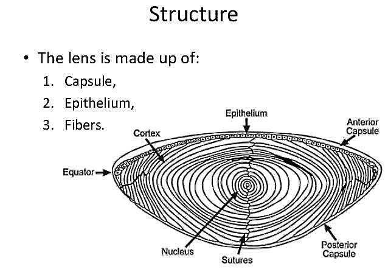

Cataract · Applied Anatomy & Physiology
Applied Anatomy and Applied Physiology
Applied Anatomy
- It has got two surfaces: the anterior surface is less convex than the posterior.
- These two surfaces meet at the equator.
Applied Physiology
1) Lens transparency: Factors that maintain the clarity and transparency of the lens are:
- Avascularity.
- Tightly packed nature of lens cells
- The arrangement of lens proteins
- Semipermeable character of lens capsule
- Pump mechanism of lens fibers’ membranes that regulate the electrolyte and water balance in the lens, maintaining relative dehydration
2) Accommodation: Changes in the crystalline lens during accommodation.
- The power of the lens increases due to the increase in the curvature of its surfaces.
- In accommodation, the curvature of the posterior surface remains almost the same, but the anterior surface becomes more convex.
